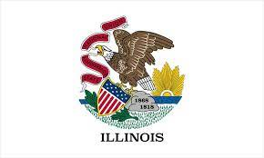

LIT Lab's Lookahead
Bringing the Assembly Line Further

The Assembly Line Project

- March 2020 - Now
- 200+ volunteers building 30 guided interviews for self represented litigants
Improvements: E-filing
- long-term email filing is burdensome for courts
- Same guided interview UI, but:
- puts info directly into court's case management system
- gets info from courts's system to help users file into existing cases

E-filing Status
- Louisiana: ready for Jefferson Parish
- Illinois: paperwork being signed
- Future: MA Appeals Court, parts of CA

Automating the Tedium
- It's hard to get 200+ volunteers: most only have 1 or 2 forms people
- tools to remove the tedious tasks those volunteers did

Discovering: Form Explorer

Prototyping: Weaver
- turn those forms into ready-to-edit guided interview drafts in one click


Refining: LIT Styler
- get actionable feedback on where to improve your interview
- prototype out now; alpha in a few months

More to Come!
 @wowitisbryce |
@wowitisbryce |